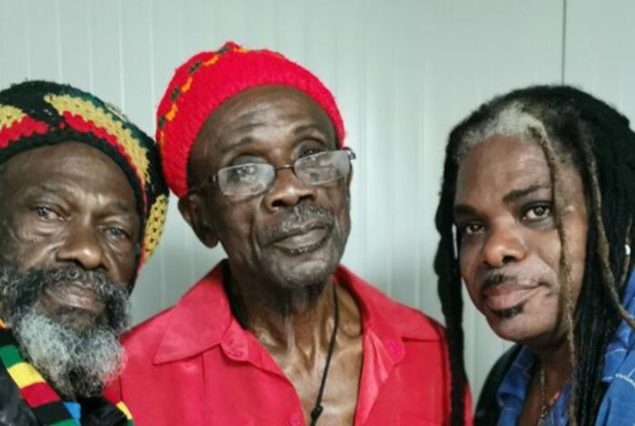

The Abyssinians
Bent u fan van The Abyssinians?
Dan heeft u geluk!
Topticketshop heeft nog tickets beschikbaar voor The Abyssinians op Dinsdag , 10 December 2019 om 20:30 uur op locatie De Oosterpoort Groningen.
De nominale waarde van deze tickets is 28 euro.
Het officiële verkooppunt voor dit evenement is De Oosterpoort Groningen.
Op alle bestellingen is onze 100% ticketgarantie van toepassing.
Het trio ontstond in 1968 en bestaat uit Donald Manning, Bernard Collins en Linford Manning.
In 1969 werd "Satte Massagana" opgenomen in Coxson Dodd’s Studio One. Het was deels gezongen in het Amhaars.
Coxson besloot het nummer zelf niet uit te brengen maar vanaf 1976 werd het uitgebracht op het debuutalbum dat bij verschillende platenmaatschappijen onder verschillende namen uitkwam.
Het nummer werd door verschillende artiesten gecoverd, waaronder Third World.
De groep ging uit elkaar in 1980 maar Donald Manning bleef de naam The Abyssinians gebruiken met een nieuwe bezetting.
De originele bezetting kwam van 1989 tot 1999 weer bij elkaar.
In 2004 en 2005 deden Donald Manning en Bernard Collins met David Morrison een tournee in de Verenigde Staten en Europa, en in 2011 in Engeland.
